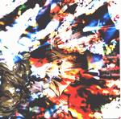

| Artist: | Dave Kerman/5uu's |
| Title: | Abandonship |
| Label: | Cuneiform Records Cuneiform Rune 158 |
| Length(s): | 49 minutes |
| Year(s) of release: | 2002 |
| Month of review: | [05/2002] |
| 1) | Yorelei Hasira #2 | 2.12 |
| 2) | Couple #3 Is A Solo | 4.14 |
| 3) | Thoroughly Modern Allila | 9.21 |
| 4) | Penguins On Dizengolf | 5.49 |
| 5) | Suits | 2.45 |
| 6) | Ringing In The New Ear | 0.40 |
| 7) | Noah's Flame | 8.58 |
| 8) | Hill Of Spring | 3.36 |
| 9) | Doubt Be Met | 1.39 |
| 10) | Bellu-up | 9.07 |
All sound samples from Abandonship appear here by permission of Cuneiform Records.
Couple #3 Is A Solo features a neurotic guitar riff, going up and down, together with percussion and synths used more as marks or rhythm almost, than in a melodic way. This all is the basis for Perry's off key singing, which all adds to the overall atmosphere of swirling mystery. This track is so diverse it's almost collage like.
Thoroughly Modern Allila (a what?) uses its length in not starting completely freaked out, but taking a couple of minutes to reach that stage. But seriously, The lines or themes in this track are somewhat longer and less jumpy than in the previous tracks. As it progresses a lull creates room for a haunted guitar, not unlike that in KC's Red with a male and female voice huh'ing eachother, in a way reminiscent of Steve Reich's voice experiments. The track closes with percussion on a slow mysterious bass, lulling you off...
...to be rudely woken by the following turmoil of Penguins In Dizendorf. Neurotic piano and loads of percussion, including the rattle, once again. Since this track has only twenty odd sounds, it's less eventful than the previous ones, but still enough to clear a party...
Suits sees the return of Perry, her mesmerizing voice (of course somewhat off key) on bass and percussion, but with an organ line that could get your basic snake out of a decent basket. The twist in this one being a piano used for less melodic purposes, dueting with a beehive.
Ringing In The New Ear tells you a story. In a 5uu's rendition, of course.
The pressing organ of Noah's Flame hunts down Perry, to finally get her under. Seemingly, that is. The track keeps switching between haunted vocal pieces and more laid back (less haunted) episodes, some with narration, until moving into a guitar dominated section, leading unto grand finale which has keys and piano dueling.
Hill Of Spring sharply states the voice versus the piano. Well, and of course the hooting claxon. And guess what ultimately prevails?
Doubt Be Met opens with vocals on organ, and apart from Perry's disconcerting vocals, this could almost be considered normal music.
Fortunately Belly-Up takes any hint of Kerman growing old away, neurotics and antics to the max on this one's opening ensuring you of that. This dynamic opening gives way to a middle section that is mainly eerie, a mumbling Perry with all kinds of key sounds in the back, but never to soothe you, slowly moving to a section where modern and classical keys duel for dominance, reaching the expected truce. This return of relative peace is celebrated by flute and acoustic guitars, but like anything where Kerman is involved, this has to step across the bounds of normalcy. Towards where we really want to go.
If you're into the melodic stuff, stay from this, but if you're game for experiment and avant garde, here's what you want. Those of you into Rorschach tests, should really check out the artwork.
www.5uus.com can tell you more about the band.